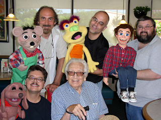

Peter's Birthday dinner party
6/22/2012
From Charles Prouty:
I just wanted to share with you and your readers about the fantastic day we had with Peter Rich. As you know Peter turned 91 this past Sunday, and to celebrate a few of us vents gathered in San Antonio for a small but festive celebration. Bob and I picked up Peter at his apartment and took him to Jim's for dinner. We were joined by David Pitts and Ron Arnold. We enjoyed a good dinner and even better conversation. Peter again held us captive with stories about his career and his experiences in show business. Peter's humor and quick whit never stops! He was flirting with our waitress and when she told him she was married, he replied "some people have two cars". Even the waitress could not stop laughing.
After dinner we pulled out the puppets (what else are a bunch of vents going to do) and had a nice little "Puppet Jam" there in the restaurant. All the customers gathered and took pictures with us. We managed to bring smiles to everyone's face.
I have only known Peter for about 6 years, but I am honored to call him a good friend.
 |
| Front row: David Pitts (left) and Peter Rich (center) Back row L-R: Bob Abdou, Charles Prouty, Ron Arnold |
{kind=link}